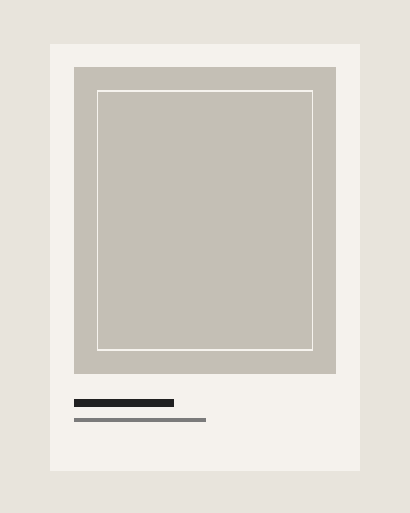
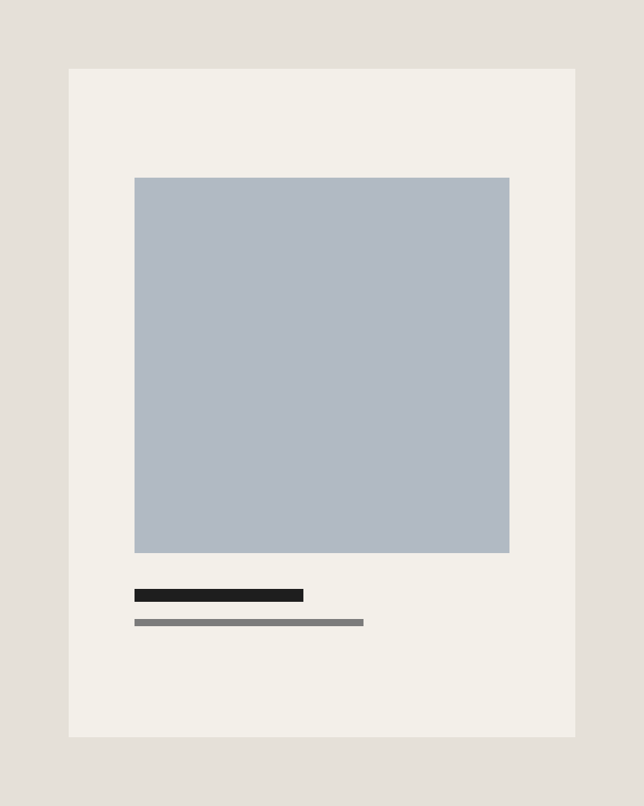

Case Study
Lineage
An exhibition framework balancing archival material, spatial direction, and public interpretation.
2023
Exhibition / Research
Case Study
An exhibition framework balancing archival material, spatial direction, and public interpretation.
2023
Exhibition / Research

The exhibition materials were designed to support looking rather than compete with it. Text panels, captions, and orientation tools all share one measured cadence.
